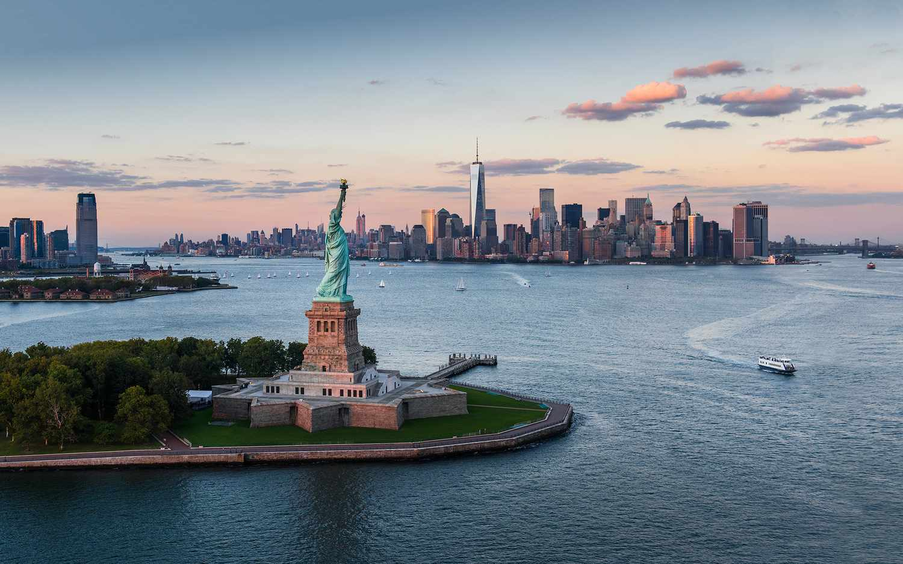
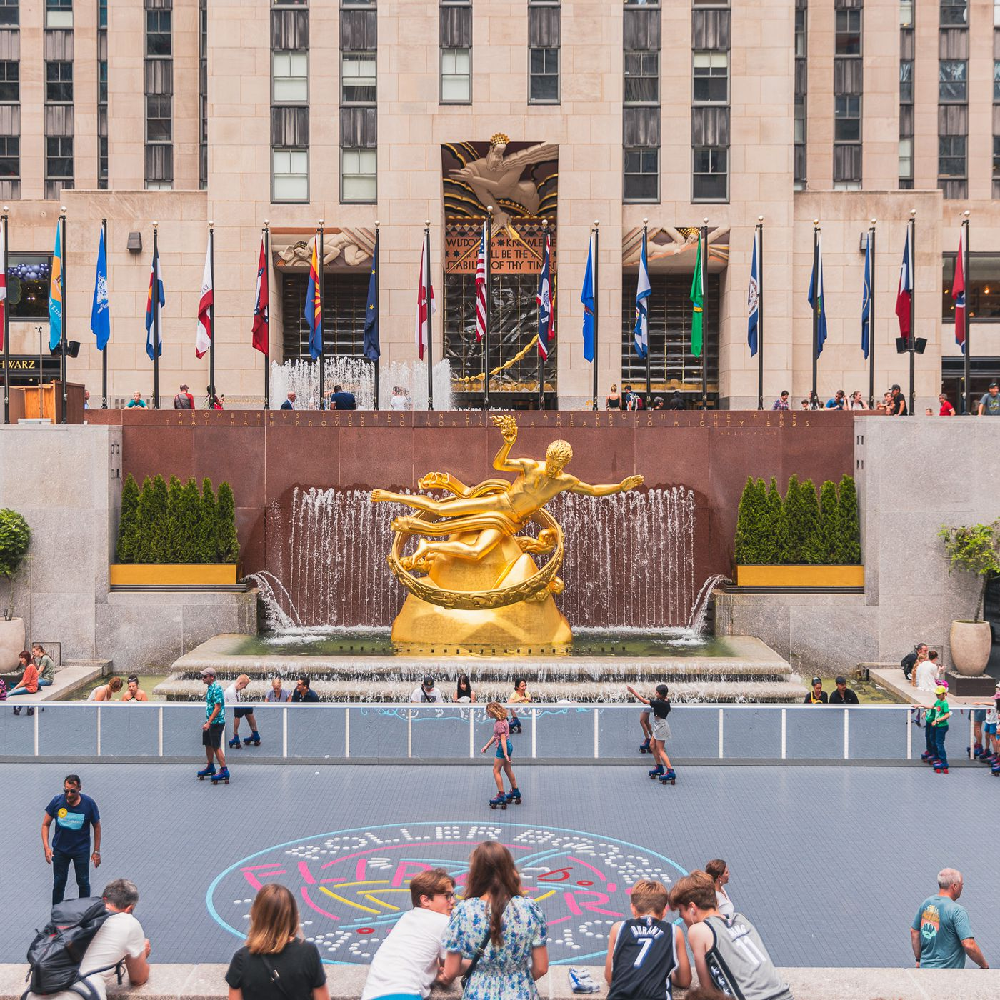

Miejsca warte odwiedzenia:
Empire State Building

Odmiennie niż większość wysokościowców, Empire State Building ma klasyczną fasadę. Rozpoznawalna iglica budynku, w stylu art déco, pierwotnie była zaprojektowana jako punkt cumowania sterowców. Testy wykonane ze sterowcami dowiodły jednak, że jest to niepraktyczne i niebezpieczne ze względu na silne podmuchy wiatru oraz wielkość budynku. Zajmuje on powierzchnię 57 na 129 metrów. Pracuje w nim 15 tysięcy osób, natomiast stały personel liczy około 250 ludzi. Co miesiąc wywozi się z niego około 100 ton odpadów, a każdego roku zużywa ponad 40 mln kilowatogodzin prądu. Kolory iluminacji szczytu budynku dobierane są odpowiednio do pory roku, jak również do obchodzonego w danym dniu święta. Każdy kolor, a także jego ustawienie, ma swoje znaczenie symboliczne. Każde ważniejsze święto, czy rocznica mają własny ustalony układ barw. Wiosną i jesienią każdego roku w mgliste noce światła na budynku są wyłączane dla bezpieczeństwa migrujących ptaków.
Dowiedz się więcejStatua Wolności
Jest to dar narodu francuskiego dla narodu amerykańskiego, upamiętniający przymierze obu narodów w czasie wojny o niepodległość Stanów Zjednoczonych[2]. W 1924 został uznany za narodowy pomnik Stanów Zjednoczonych, a w 1984 wpisany na listę światowego dziedzictwa UNESCO. Figuruje również w rejestrze National Register of Historic Places. Pomnik, utrzymany w stylu neoklasycyzmu realistycznego, jest dziełem francuskiego rzeźbiarza Frédérica Auguste’a Bartholdiego. Przedstawia postać kobiecą trzymającą w prawej dłoni pochodnię, a w lewej tablicę, na której umieszczona jest data uzyskania niepodległości przez Stany Zjednoczone. Wyryte jest dokładnie: JULY IV MDCCLXXVI (4 lipca 1776). Na koncepcję Statuy Wolności miał wpływ obraz Eugène Delacroix – Wolność wiodąca lud na barykady, a jej twarzy Bartholdi nadał rysy własnej matki, lecz ciało wzorował na swojej kochance.
Dowiedz się więcejCentral Park

Kiedy w 1853 władze Nowego Jorku podjęły decyzję o zagospodarowaniu terenu na park miejski, było to „odludzie” (znajdowała się tam jedynie mała osada zamieszkana głównie przez zbiegłych czarnoskórych niewolników) pomiędzy Nowym Jorkiem a wioską Harlem. W 1857 ogłoszony został konkurs na koncepcję parku. Wygrał projekt Fredericka Law Olmsteda i Calverta Vaux nazwany The Greensward Plan. Z założenia park miał być miejscem wypoczynku dla nowojorczyków. Z biegiem czasu został także uznany za rodzaj społecznego eksperymentu mającego na celu asymilację nowojorczyków z niższych i wyższych warstw społecznych. W 1980 powstała organizacja o nazwie Central Park Conservancy zajmująca się renowacją oraz dbaniem o Central Park. We współpracy z władzami Nowego Jorku zebrali oni około 50 mln dolarów na renowację parku, zajęli się usuwaniem graffiti. Dzięki ich wysiłkom Central Park jest teraz zadbanym, czystym miejscem wypoczynku w Nowym Jorku, który rocznie odwiedza 42 mln ludzi.
Dowiedz się więcejRockefeller Center
kompleks 19 budynków komercyjnych między 48. a 51. ulicą w Nowym Jorku. Zbudowany przez rodzinę Rockefellerów, jest zlokalizowany w centralnej części Manhattanu, zwanej Midtown Manhattan i obejmuje teren między Piątą i Szóstą Aleją. Jest to największy tego typu kompleks budynków na świecie, pokrywa łączną powierzchnię 89 000 m². Rockefeller Center określony został mianem Narodowego Pomnika Historycznego w 1987 roku. Nazwa Rockefeller Center pochodzi od założyciela, Johna D. Rockefellera Jr., który w 1928 roku wydzierżawił teren od Columbia University i dwa lata później rozpoczął na nim prace. Rockefeller planował początkowo budowę nowego obiektu dla Metropolitan Opera, jednak po krachu na nowojorskiej giełdzie papierów wartościowych w 1929 roku wykreślił operę z projektu. Przyznał później: „Było oczywistym, że mogłem zrobić tylko dwie rzeczy. Pierwszą było porzucenie całej inwestycji. Inną, podjęcie ryzyka i samodzielna budowa oraz samodzielne finansowanie.” Rockefeller zdecydował ostatecznie, że będzie kontynuował prace.
Dowiedz się więcej